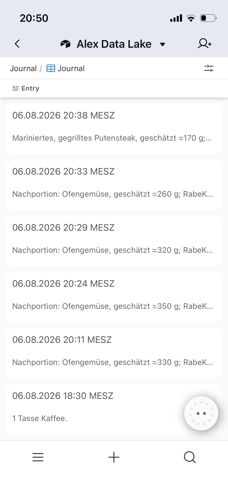

CASE 01
A personal data lake without another tracking app
Natural-language observations are written into Airtable as timestamped facts. Meals, symptoms, ideas and context remain searchable without forcing life into rigid forms.
- One conversational input
- Raw facts preserved
- Calculations only when needed
- No duplicate logging workflow
